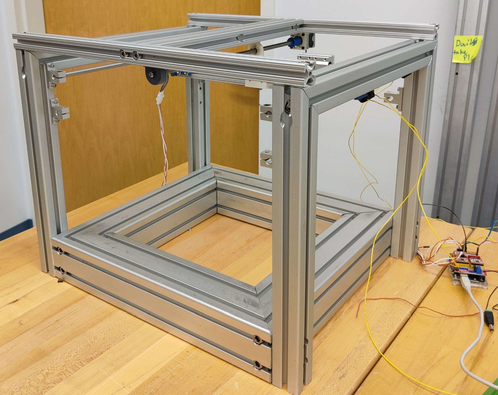

Sprint Two - CNC controlled X-Y Gantry
Overview
In sprint 2, we focused on working on the other half of the concept we did not work on in sprint 1: the gantry system that moves the tool head. We ended up applying a lot of the learning we gained in sprint 1, working more precisely with stepper motors and making a robust cutting platform.
Mechanical
In sprint 2, we produced our first prototype X-Y gantry. We originally planned to finish the gantry in this sprint and simply attach it. At this point our plan was to move the spindle head in all 3 axes while the material stays still and secured.
This plan meant a lot of work in simply creating a frame/chassis to put it in. The entire chassis was constructed from a collection of different sizes of 8020 t-slotted extruded aluminum. At this point, we developed the plan to use lead screws and linear rods in our final designs. Both of them would work well enough and were cheap enough to be viable. We used some NEMA 14 motors acquired from a scavenged 3D printer to move these lead screws.
Almost the entire gantry was manufactured primarily using a horizontal bandsaw and drill press. Regrettably, this meant that tolerances weren't very high, and the linear rods ended up not perfectly parallel and some parts were not properly aligned. This led to the motors encountering a lot of resistance and would lead to a bad cut if we were to use it further.
Electrical
We upgraded from the Arduino motor shield in the previous sprint to a CNC shield, which allowed us to control both the X and Y stepper motors in this sprint. For this sprint we also implemented limit switches on both axes and a switch to act as an emergency stop, which we were also able to wire to the CNC shield. As we were not using the tool head in this sprint, we powered all of our electronics off of a 12V power supply.
Software
In this sprint we focused on pivoting to using GRBL to control our gantry movements. We spent time learning how to use GRBL with our Arduino, as well as learning how to use Universal G-Code Sender to communicate with GRBL. We held off on running more advanced movements, preferring to focus on configuring GRBL and UGS with our limit switches and steppers, only moving the gantry via jogging.